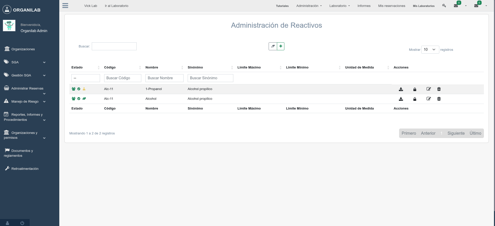

2. Clasificación SGA
El Sistema Globalmente Armonizado de clasificación y etiquetado de productos químicos (SGA/GHS) es el estándar internacional que Organilab utiliza para clasificar las sustancias según sus peligros físicos, para la salud y para el medio ambiente.
¿Qué es el SGA (GHS)?
El SGA (en inglés GHS - Globally Harmonized System) fue desarrollado por las Naciones Unidas para unificar los diferentes sistemas de clasificación de peligros químicos que existían en el mundo. Su objetivo es que una misma sustancia se clasifique y etiquete de la misma manera en todos los países, facilitando el comercio internacional y mejorando la protección de las personas y el medio ambiente.
Códigos H: Indicaciones de Peligro
Las indicaciones de peligro (códigos H, del inglés Hazard statements) son frases estandarizadas que describen la naturaleza y gravedad del peligro de una sustancia. Se organizan en tres series principales:
Serie H200: Peligros físicos
Describen peligros relacionados con las propiedades físicas de la sustancia:
- H200-H205: Explosivos
- H220-H230: Gases y líquidos inflamables
- H240-H242: Sustancias autorreactivas
- H250-H252: Sustancias que se inflaman espontáneamente
- H260-H261: Sustancias que emiten gases inflamables al contacto con agua
- H270-H272: Sustancias comburentes
- H280-H284: Gases a presión
- H290: Corrosivo para los metales
Serie H300: Peligros para la salud
Describen efectos adversos sobre la salud humana:
- H300-H312: Toxicidad aguda (oral, cutánea, por inhalación)
- H314-H318: Corrosión/irritación cutánea y ocular
- H330-H336: Toxicidad por inhalación y efectos narcóticos
- H340-H341: Mutagenicidad
- H350-H351: Carcinogenicidad
- H360-H362: Toxicidad reproductiva
- H370-H373: Toxicidad específica en órganos diana
- H304: Peligro por aspiración
Serie H400: Peligros para el medio ambiente
Describen efectos nocivos para el medio ambiente acuático:
- H400: Muy tóxico para los organismos acuáticos
- H410: Muy tóxico para los organismos acuáticos con efectos duraderos
- H411: Tóxico para los organismos acuáticos con efectos duraderos
- H412: Nocivo para los organismos acuáticos con efectos duraderos
- H413: Puede ser nocivo para los organismos acuáticos con efectos duraderos
- H420: Perjudicial para la capa de ozono
Tabla de Ejemplo: Sustancias y sus Códigos H
| Sustancia | CAS | H-codes | Clase de peligro |
|---|---|---|---|
| Ácido sulfúrico | 7664-93-9 | H290, H314 | Corrosivo |
| Acetona | 67-64-1 | H225, H319, H336 | Inflamable |
| Metanol | 67-56-1 | H225, H301, H311, H331, H370 | Tóxico |
Clases de Peligro: Estructura Jerárquica
En Organilab, las clases de peligro se organizan en una estructura de árbol jerárquico con tres niveles: tipo de peligro, clase y categoría. Esta jerarquía permite una clasificación precisa de cada sustancia.
Estructura jerárquica de clases de peligro: Tipo de Peligro -> Clase -> Categoría
Códigos P: Consejos de Prudencia
Los códigos P (del inglés Precautionary statements) son frases estandarizadas que indican medidas para minimizar o prevenir los efectos adversos de la exposición a una sustancia. Se organizan en cuatro grupos:
| Serie | Tipo | Ejemplo |
|---|---|---|
| P100 | General | P102: Mantener fuera del alcance de los niños |
| P200 | Prevención | P210: Mantener alejado de fuentes de calor, chispas, llama abierta |
| P300 | Respuesta | P301+P310: EN CASO DE INGESTIÓN: llamar inmediatamente a un centro de toxicología |
| P400 | Almacenamiento | P403: Almacenar en un lugar bien ventilado |
| P500 | Eliminación | P501: Eliminar el contenido según la normativa local |
En Organilab, cada indicación de peligro (código H) tiene asociados sus consejos de prudencia (códigos P) correspondientes. Al clasificar una sustancia con sus códigos H, el sistema automáticamente identifica los códigos P aplicables.
Otras Clasificaciones en Organilab
IARC (Agencia Internacional para la Investigación del Cáncer)
La clasificación IARC evalúa el potencial carcinogénico de las sustancias. Organilab permite registrar el grupo IARC en las características de sustancia. Los grupos van desde "Grupo 1: Carcinógeno para humanos" hasta "Grupo 4: Probablemente no carcinógeno".
IMDG (Código Marítimo Internacional de Mercancías Peligrosas)
El código IMDG clasifica las mercancías peligrosas para su transporte marítimo. Este campo es útil para laboratorios que reciben o envían sustancias por vía marítima, y se registra en las características de la sustancia.
NFPA 704 (Diamante de Peligro)
El sistema NFPA utiliza un diamante con cuatro cuadrantes de colores para indicar los niveles de peligro de 0 a 4: salud (azul), inflamabilidad (rojo), reactividad (amarillo) y riesgo específico (blanco). Organilab almacena estos valores en las características de sustancia para su consulta rápida.

Formulario de clasificación SGA con códigos H y P seleccionados en Organilab